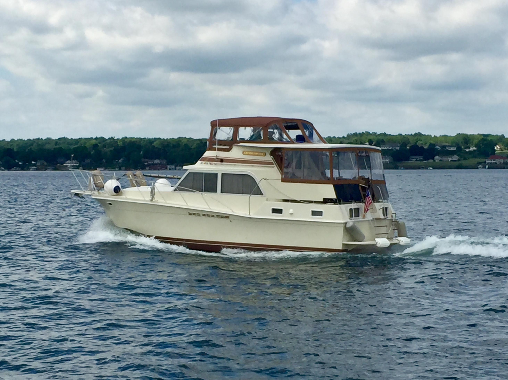

B-Scout Boat Guide · UNIF-36-DO
Uniflite 36 Double Cabin Aft Cabin Motor Yacht
1972–1984
The Uniflite 36 Double Cabin is a U.S.-built aft-cabin motor yacht with a solid-fiberglass hull, full-width aft master stateroom and dual helm stations. It is a conventional planing powerboat rather than a trawler, and most examples were delivered with twin gasoline inboards.

- Length
- 36 ft
- Beam
- 12.33 ft
- Draft
- 2.67 ft
- Hull behaviour
- Planing
- Fuel
- Gasoline
- Propulsion
- Shaft
- Engine configuration
- Twin gasoline inboards standard; repowers vary
- Boat family
- Motor Yacht
- Construction
- Fiberglass
Best for
- Great Lakes and coastal buyers wanting an older aft-cabin motor yacht
- Families prioritizing two private sleeping areas
- Owners comfortable with twin gasoline machinery or documented repowers
Trade-offs
- Twin gasoline power increases fuel consumption relative to diesel trawlers
- Older examples require careful blister and laminate inspection
- Aft-cabin windage and systems age increase docking and ownership demands
Known concerns
- No model-specific concern has been promoted to B-Scout’s evidence threshold. This does not mean the model has no age-, condition- or hull-specific risks.
Inspection focus
- Inspect hull and topsides carefully for blistering and laminate repairs
- Confirm 1984 36 II versus earlier solid-hull configuration
- Inspect fuel system, gasoline ventilation, exhaust and ignition-protection equipment
- Inspect decks, windows and flybridge penetrations
- Inspect shafts, rudders and steering
Continue researching
Related boat models
Trojan F-36 Tri-Cabin Tri-Cabin Motor Yacht
36 ft · Planing
Carver 3807 / 390 Aft Cabin Aft Cabin Motor Yacht
37.5 ft · Planing
Bayliner 3870 / 3888 Motor Yacht Mid-Cabin Flybridge Motor Yacht
38.17 ft · Semi-Displacement
Bayliner 3388 Motor Yacht Flybridge Motor Yacht
32.92 ft · Semi-Displacement
Bayliner 3788 Motor Yacht Two-Generation Flybridge Motor Yacht
39.33 ft · Planing
Silverton 34 Motor Yacht Aft Cabin Motor Yacht
39.83 ft · Planing
About this record
B-Scout preserves uncertainty: missing information remains unknown rather than being treated as a negative. Specifications and guidance describe the model record; individual boats can differ by year, equipment, refit and condition.